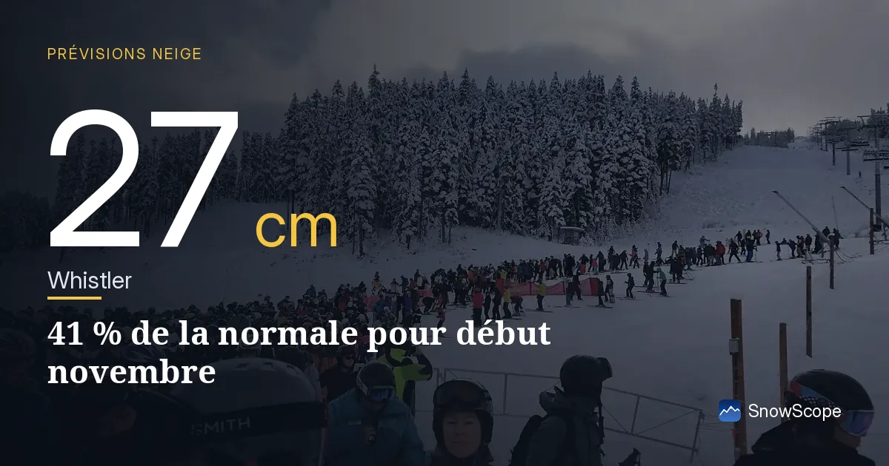
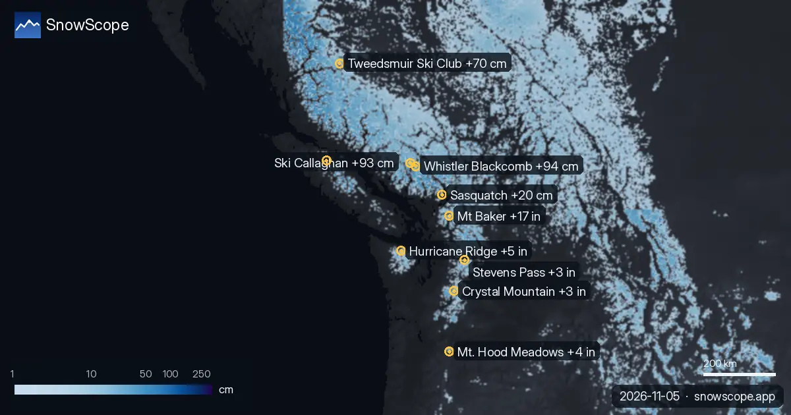

Whistler 27 cm : 41 % de la normale pour début novembre
Whistler Blackcomb affiche un déficit de 39 cm par rapport à la normale de début novembre, avec seulement 27 cm mesurés le 5 novembre contre une moyenne de 66 cm. Un système de tempête majeur inversera nettement ce déficit, apportant 22 cm dans les 24 prochaines heures et 94 cm au total jusqu'au 8 novembre.
Consultez les prévisions neige en temps réel pour Whistler Blackcomb sur l'application SnowScopeHauteurs de neige, alertes poudreuse et carte 3D, gratuitement.
Ce que le déficit actuel signifie
Avec 27 cm, le manteau neigeux de Whistler affiche seulement 41 % de sa moyenne de début novembre. Cela va au-delà des conditions de ski. La profondeur de neige en haute montagne constitue une réserve d'eau au-dessus du sol. Ce déficit précoce signifie que moins d'eau alimentera les rivières et les réservoirs pendant le cycle de fonte hivernale. L'écart de 39 cm est significatif—il représente un volume d'eau considérable s'il est mesuré sur la zone de la montagne. De tels déficits en novembre peuvent persister toute la saison sauf si des systèmes comme celui arrivant actuellement les comblent.
| # | Station | Région | +24 h | +72 h | Limite pluie-neige |
|---|---|---|---|---|---|
| 1 | Saas Grund | Alpes · Suisse | 14 cm | 21 cm | 2 300 m |
| 2 | Grindelwald | Alpes · Suisse | 14 cm | 18 cm | 2 000 m |
| 3 | Zermatt | Alpes · Italie / Suisse | 14 cm | 18 cm | 2 400 m |
| 4 | Pescegallo | Alpes · Italie | 7 cm | 18 cm | 1 600 m |
| 5 | La Grave | Alpes · France | 16 cm | 16 cm | 2 900 m |
| 6 | Arolla | Alpes · Suisse | 14 cm | 16 cm | 2 200 m |
| 7 | Engstligenalp | Alpes · Suisse | 14 cm | 16 cm | 2 000 m |
| 8 | Glacier 3000 | Alpes · Suisse | 13 cm | 16 cm | 2 200 m |
| # | Station | Région | +24 h | +72 h | Limite pluie-neige |
|---|---|---|---|---|---|
| 1 | Mt Baker | Ouest américain · États-Unis | 4 in (11 cm) | 17 in (42 cm) | 9 200 ft (2 800 m) |
| 2 | Hurricane Ridge | Ouest américain · États-Unis | 1 in (2 cm) | 5 in (13 cm) | 9 500 ft (2 900 m) |
| 3 | Mt. Hood Meadows | Ouest américain · États-Unis | 0 in (0 cm) | 4 in (9 cm) | 11 500 ft (3 500 m) |
| 4 | Stevens Pass | Ouest américain · États-Unis | 1 in (2 cm) | 3 in (7 cm) | 8 900 ft (2 700 m) |
| 5 | Crystal Mountain | Ouest américain · États-Unis | 0 in (1 cm) | 3 in (7 cm) | 10 800 ft (3 300 m) |
| 6 | Tuckerman Ravine | Nord-Est américain · États-Unis | 0 in (0 cm) | 3 in (7 cm) | – |
| 7 | Sahalie Ski Club | Ouest américain · États-Unis | 0 in (1 cm) | 2 in (6 cm) | 9 200 ft (2 800 m) |
| 8 | Saddleback Mountain | Nord-Est américain · États-Unis | 0 in (0 cm) | 2 in (5 cm) | 10 800 ft (3 300 m) |
| # | Station | Région | +24 h | +72 h | Limite pluie-neige |
|---|---|---|---|---|---|
| 1 | Whistler Blackcomb | Ouest canadien · Canada | 22 cm | 94 cm | 2 400 m |
| 2 | Ski Callaghan | Ouest canadien · Canada | 32 cm | 93 cm | 2 200 m |
| 3 | Tweedsmuir Ski Club | Ouest canadien · Canada | 37 cm | 70 cm | 1 200 m |
| 4 | Mount Cain Alpine Park | Ouest canadien · Canada | 8 cm | 54 cm | 2 300 m |
| 5 | Sasquatch | Ouest canadien · Canada | 1 cm | 20 cm | 2 600 m |
| 6 | Mount Washington Alpine Resort | Ouest canadien · Canada | 0 cm | 17 cm | 2 800 m |
| 7 | Manning Park Resort | Ouest canadien · Canada | 2 cm | 16 cm | 2 700 m |
| 8 | Purden Ski Village | Ouest canadien · Canada | 7 cm | 14 cm | 2 500 m |

L'événement à venir et son ampleur
Notre modèle de prévision montre qu'un système majeur déposera 22 cm de neige fraîche sur les pentes supérieures de Whistler dans les 24 prochaines heures, atteignant 94 cm le 8 novembre. Ce n'est pas un événement marginal. La limite de neige est modélisée à 2 400 m, donc les précipitations tomberont principalement sous forme de neige sur le terrain principal de Whistler. L'intensité est significative : en trois jours, la montagne gagnera environ 2,5 fois sa profondeur actuelle. Ce système seul n'effacera pas complètement le déficit saisonnier, mais il constituera un excellent début.

L'ouest du Canada domine ce système
Whistler devrait connaître des chutes de neige substantielles, mais ce n'est pas le leader régional pour ce système. Ski Callaghan, également en Colombie-Britannique, recevra 32 cm en 24 heures et 93 cm au total en 72 heures. Tweedsmuir Ski Club verra 37 cm dans les 24 premières heures et 70 cm au total. Mount Cain Alpine Park recevra 8 cm en 24 heures et 54 cm sur trois jours. Ce système est concentré dans l'ouest du Canada. Les Alpes verront aussi de la neige—Saas Grund est prévue pour 14 cm en 24 heures et 21 cm au total—mais bien moins. Le nord-ouest du Pacifique américain reçoit des totaux encore plus légers : Mt Baker s'attend à 11 cm (4 po) en 24 heures et 42 cm (17 po) sur 72 heures.

Une perspective hydrologique
Du point de vue d'un hydrologue, le moment et le lieu des chutes de neige affectent l'approvisionnement en eau dans les mois à venir. Les 27 cm mesurés le 5 novembre à Whistler constituent une mesure ponctuelle ; la profondeur réelle de neige sur la montagne varie selon l'aspect de la pente et l'altitude. Notre prévision de modèle de 94 cm est une estimation pour les pentes supérieures ; certains couloirs protégés accumuleront plus, les crêtes exposées moins. La neige de début de saison en montagne côtière se compacte généralement rapidement en couches denses et riches en eau—cela se convertit efficacement en ruissellement printanier. Le déficit importe parce que le stockage d'eau retardé compresse la saison de fonte, affectant les débits fluviaux et le moment du remplissage des réservoirs en aval.
Ce qu'il faut surveiller et conseils pratiques
Au cours des trois prochains jours, surveillez l'évolution de la limite de neige. Actuellement modélisée à 2 400 m, elle peut se décaler selon l'intensité de la tempête et la température de l'air. Une limite de neige plus élevée signifie plus de pluie aux altitudes inférieures ; une limite plus basse signifie une accumulation plus profonde au sommet. Les charges de neige de début de saison sur une couche de base mince peuvent déclencher des avalanches. Consultez le bulletin officiel d'avalanche si vous vous aventurez hors-piste. La prévision de 94 cm est l'estimation de notre modèle pour les pentes supérieures—les couloirs abrupts verront plus, le terrain exposé moins. Les rochers et les sols clairsemés sont toujours visibles aux altitudes intermédiaires même après de fortes chutes, donc restez attentif aux dangers du terrain.
Conseils aux skieurs
- Surveillez la limite de neige au cours des 48 prochaines heures. Si elle reste près de 2 400 m, une pluie sur neige est possible aux altitudes intermédiaires et peut tasser la couverture existante.
- 94 cm est une prévision pour les pentes supérieures ; le terrain inférieur peut voir de la pluie à la place. Vérifiez où se situe la limite de neige de 2 400 m à l'altitude de votre choix.
- Les avalanches de début de saison sont courantes quand des charges de neige lourdes tombent sur des couches de base minces. Consultez le bulletin officiel d'avalanche si vous vous aventurez hors-piste.
- Les rochers et les sols clairsemés sont toujours visibles aux altitudes intermédiaires même après l'arrivée de ce système. La neige de début de saison est mince ; restez attentif aux dangers du terrain.
- Le système se déploiera du vendredi au dimanche (6–8 novembre). La plupart de la neige tombera vendredi et samedi ; vérifiez le statut d'ouverture des remontées et du terrain de votre station samedi matin.
À propos de ces chiffres
Les hauteurs de neige des stations sont la neige la plus épaisse sur le haut du domaine, d'après le modèle de neige SnowScope (environ 1 km, calcul du 5 novembre) ; ce sont des estimations pour une zone, pas une mesure en un point. Les valeurs des stations de mesure sont mesurées à la date indiquée. Les prévisions peuvent changer. Consultez toujours le bulletin d'avalanche officiel avant le hors-piste.
Bulletins d'avalanche officiels: EAWS (Europe) · avalanche.org (US) · Avalanche Canada
Citer ce bulletin
Pour la recherche, l'enseignement ou la presse : chiffres et graphiques réutilisables librement sous CC BY 4.0 avec cette citation.
SnowScope (2026), Whistler 27 cm : 41 % de la normale pour début novembre, https://snowscope.app/blog/fr/2026/11/where-most-snow-falls-next-72-hours-5-november-2026.html, consulté le 2026-11-05
SnowScope (Atlas Labs). (2026, November 5). Whistler 27 cm : 41 % de la normale pour début novembre. SnowScope snow reports. https://snowscope.app/blog/fr/2026/11/where-most-snow-falls-next-72-hours-5-november-2026.html
BibTeX
@misc{snowscope2026wheremostsnowfallsnext72,
author = {{SnowScope (Atlas Labs)}},
title = {Whistler 27 cm : 41 % de la normale pour début novembre},
year = {2026},
month = nov,
howpublished = {\url{https://snowscope.app/blog/fr/2026/11/where-most-snow-falls-next-72-hours-5-november-2026.html}},
note = {Published 2026-11-05 10:27 UTC; accessed 2026-11-05}
}· CC BY 4.0 · Méthodes, données et outils →
Whistler Blackcomb : neige et température selon l'altitude, cet hiver vs l'hiver dernier (outils) →
Suivre Whistler Blackcomb
Gratuit : un message quand la neige arrive, et la météo chaque matin.